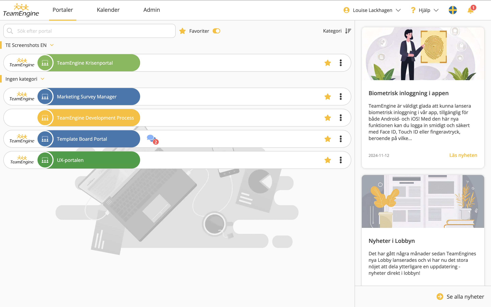
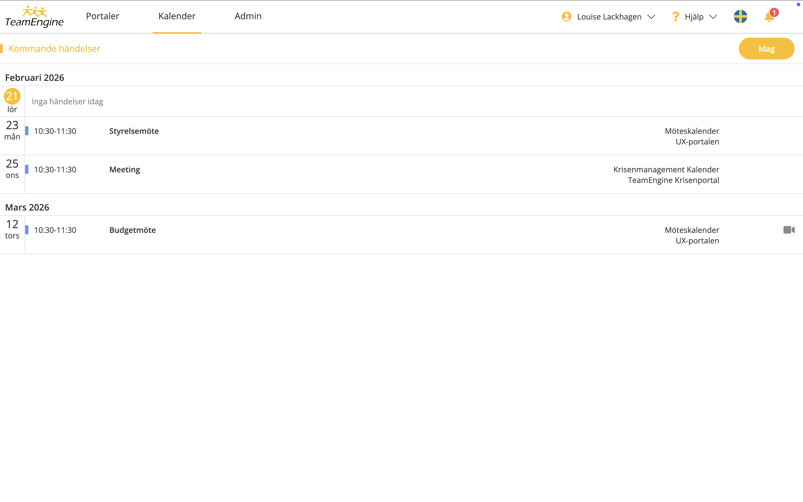

Redesign |User Research | Interactive Prototyping | User Testing | Figma | CSS
The Lobby is the first view users encounter when logging into TeamEngine. Previously, the page consisted of a simple text based list of portals, access to basic settings, and a basic search function.
As TeamEngine evolved, this entry experience no longer reflected the product’s capabilities. It lacked clarity, scalability, and strategic value. The challenge was to transform the Lobby from a static navigation page into a structured and dynamic hub that could support multiple user needs while aligning with the modern TeamEngine design.
The goal was to improve clarity, introduce new functionality, reduce dependency on customer support, and create a stronger first impression.
Define: Together with another designer, we initiated the project with a focus group to identify key pain points, missing functionality, and what users considered most important in their daily workflows. We conducted design research before moving into prototyping to better understand dashboard patterns, navigation models, and self service structures. Insights were translated into clear user stories and a structured requirement list to align product, business, and user needs.
Ideate: Based on research findings, we defined a new three tab structure consisting of Portals, Calendar, and Admin. We explored multiple layout directions and navigation concepts to create a centralized control hub rather than a simple link list. Early wireframes and the requirement specification were presented to stakeholders to ensure alignment before moving forward.
Prototype: We began developing high fidelity sketches to establish layout, hierarchy, and visual clarity. Throughout the process, simplified sketches were shared with the focus group to gather early feedback and validate direction. We then finalized the high fidelity designs with full interaction flows and considered translations continuously to ensure clarity across languages and markets.
Test: Conducted moderated lab testing on the high fidelity prototypes. The sessions focused on navigation clarity, admin comprehension, and overall first impression. Feedback provided valuable insights into labeling, hierarchy, and usability improvements.
Iterate: Refined filtering behavior, improved visual hierarchy in the admin overview, and clarified the connection between meetings and portals in the calendar. Final high fidelity designs were completed and prepared for development handoff.
The Lobby evolved from a simple text list into a centralized control hub structured around three main tabs: Portals, Calendar, and Admin.
Improved Multi Portal Clarity: Users managing multiple portals gained clearer navigation, better filtering options, and stronger contextual understanding of where meetings and content belonged.
Admin Self Service: Administrators received a comprehensive overview of portal storage, member count, and access management. They could independently manage add ons such as additional storage, video conferencing, board evaluation, multi factor authentication, and other services. This significantly reduced manual handling by customer support and increased customer autonomy.
Integrated Communication Channel: A news section was introduced in the second version of Lobby, enabling TeamEngine to communicate maintenance updates and new feature releases directly within the product.
Modernized Login Experience: The outdated login interface was redesigned to match the portal’s design system, creating a cohesive and modern first impression aligned with the overall product experience.
Scalable Foundation: The three tab structure established a flexible and scalable framework, allowing the Lobby to evolve alongside future product expansion.
Lobby Portals view

Lobby Calendar view
